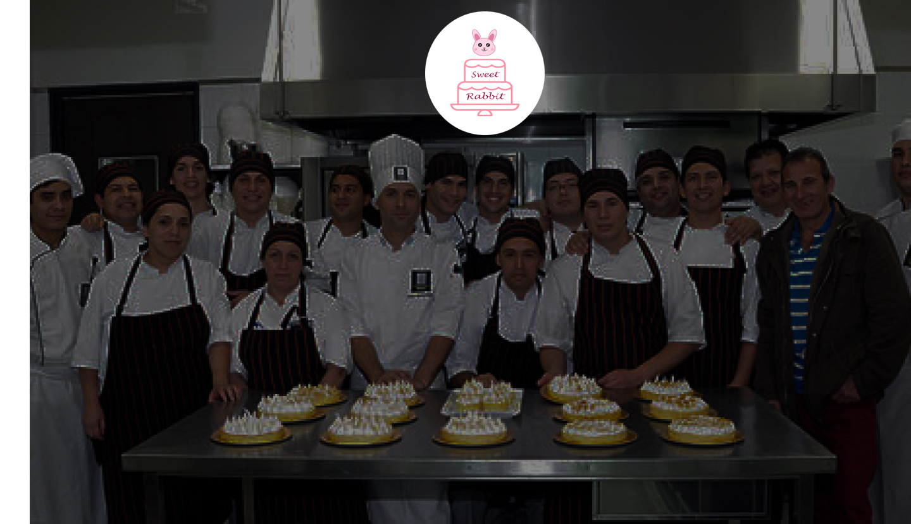

En Sweet Rabbit, creemos en la magia que se encuentra en cada bocado dulce. Somos más que una
pastelería; somos artesanos culinarios dedicados a transformar ingredientes de alta calidad en
auténticas obras de arte comestibles.
Nuestra historia comenzó con una pasión compartida por la repostería y un deseo profundo de endulzar
los
momentos especiales en la vida de las personas. Cada pastel, cada galleta y cada postre que creamos
refleja nuestra devoción por el detalle y el sabor excepcional.
Nuestros chefs pasteleros, expertos en su oficio, fusionan la creatividad con técnicas tradicionales
para dar vida a diseños únicos y sabores cautivadores. Cada creación es una expresión de amor por la
pastelería, y cada bocado es una invitación a disfrutar de momentos indulgentes y memorables.